5. الإصدار 1: بنية Spring / JPA
نقترح كتابة تطبيق وحدة تحكم بالإضافة إلى تطبيق رسومي يسمح بإعداد كشف راتب المربيات اللواتي يعملن في "دار الطفولة المبكرة" في إحدى البلديات. سيكون لهذا التطبيق البنية التالية:
 |
5.1. BD قاعدة البيانات
سيتم وضع البيانات الثابتة المفيدة لإنشاء كشف الراتب في قاعدة بيانات سنشير إليها لاحقًا باسم dbpam. قد تحتوي قاعدة البيانات هذه على الجداول التالية:
الهيكل:
المفتاح الأساسي | |
رقم الإصدار – يزداد مع كل تعديل في السطر | |
رقم الضمان الاجتماعي للموظف – فريد | |
اسم الموظف | |
اسمه الأول | |
عنوانه | |
مدينته | |
الرمز البريدي | |
مفتاح أجنبي في الحقل [ID] من الجدول [INDEMNITES] |
قد يكون محتواه كما يلي:

الهيكل:
المفتاح الأساسي | |
رقم الإصدار – يزداد مع كل تعديل في السطر | |
النسبة المئوية: الاشتراك الاجتماعي العام + الاشتراك في سداد الدين الاجتماعي | |
النسبة المئوية: الاشتراك الاجتماعي العام القابل للخصم | |
النسبة المئوية: الضمان الاجتماعي، الأرامل، الشيخوخة | |
النسبة المئوية: المعاش التكميلي + التأمين ضد البطالة |
قد يكون محتواه كما يلي:

معدلات الاشتراكات الاجتماعية مستقلة عن الموظف. الجدول السابق يحتوي على سطر واحد فقط.
المفتاح الأساسي | ||
رقم الإصدار – يزداد مع كل تعديل للسطر | ||
مؤشر المعالجة – فريد | ||
السعر الصافي باليورو لساعة الحراسة | ||
بدل الإعاشة باليورو لكل يوم من أيام الحراسة | ||
بدل الوجبات باليورو لكل يوم رعاية | ||
بدل الإجازات المدفوعة الأجر. وهي نسبة مئوية تُطبق على الراتب الأساسي. | ||
قد يكون محتواها كما يلي:

تجدر الإشارة إلى أن البدلات قد تختلف من مربية أطفال إلى أخرى. فهي مرتبطة بمربية أطفال معينة من خلال مؤشر راتبها. وبالتالي، فإن السيدة ماري جوفينال التي لديها مؤشر راتب يبلغ 2 (الجدول EMPLOYES) تحصل على أجر ساعي قدره 2,1 يورو (الجدول INDEMNITES).
5.2. طريقة حساب أجر مربية الأطفال
نقدم الآن طريقة حساب الراتب الشهري لمربية أطفال. ولا ندعي أن هذه هي الطريقة المستخدمة في الواقع. نأخذ كمثال راتب السيدة ماري جوفينال التي عملت 150 ساعة على مدار 20 يومًا خلال الشهر المراد الدفع فيه.
يتم أخذ العناصر التالية في الاعتبار: | | |
الراتب الأساسي لمربية الأطفال يُحسب بالصيغة التالية: | ||
يجب اقتطاع عدد معين من الاشتراكات الاجتماعية يجب اقتطاعها من هذا الراتب الأساس: | | |
إجمالي الاشتراكات الاجتماعية: | ||
بالإضافة إلى ذلك، يحق للمربية الخاصة الحصول على بدل إعاشة وبدل وجبات طعام عن كل يوم عمل. وبهذا الصدد، تتلقى البدلات التالية: | | |
وفي النهاية، يكون الراتب الصافي المستحق للمربية كما يلي: |
5.3. طريقة عمل تطبيق وحدة التحكم
فيما يلي مثال على تشغيل تطبيق وحدة التحكم في نافذة DOS:
سنكتب برنامجًا يستقبل المعلومات التالية:
- رقم الضمان الاجتماعي للمربية (254104940426058 في المثال - السطر 1)
- إجمالي عدد ساعات العمل (150 في المثال - السطر 1)
- إجمالي عدد أيام العمل (20 في المثال - السطر 1)
نلاحظ أن:
- الأسطر 9-14: تعرض المعلومات المتعلقة بالموظف الذي تم إدخال رقم الضمان الاجتماعي الخاص به
- الأسطر 17-20: تعرض معدلات الاشتراكات المختلفة
- الأسطر 23-26: تعرض التعويضات المرتبطة بمؤشر راتب الموظف (هنا المؤشر 2)
- الأسطر 29-33: تعرض العناصر المكونة للراتب المستحق
يُشير التطبيق إلى الأخطاء المحتملة:
استدعاء بدون معلمات:
dos>java -jar pam-spring-ui-metier-dao-jpa-eclipselink.jar
Syntaxe : pg num_securite_sociale nb_heures_travaillées nb_jours_travaillés
استدعاء ببيانات خاطئة:
dos>java -jar pam-spring-ui-metier-dao-jpa-eclipselink.jar 254104940426058 150x 20x
Le nombre d'heures travaillées [150x] est erroné
Le nombre de jours travaillés [20x] est erroné
استدعاء برقم ضمان اجتماعي خاطئ:
dos>java -jar pam-spring-ui-metier-dao-jpa-eclipselink.jar xx 150 20
L'erreur suivante s'est produite : L'employé de n°[xx] est introuvable
5.4. طريقة عمل التطبيق الرسومي
يتيح التطبيق الرسومي حساب رواتب المربيات من خلال نموذج Swing:
 |
- المعلومات التي تم تمريرها كمعلمات إلى برنامج وحدة التحكم، يتم الآن إدخالها باستخدام حقول الإدخال [1, 2, 3].
- يطلب الزر [4] حساب الراتب
- يعرض النموذج العناصر المختلفة للراتب حتى الراتب الصافي المستحق الدفع [5]
لا تعرض القائمة المنسدلة [1, 6] أرقام الموظفين SS بل أسماءهم وألقابهم. نفترض هنا أنه لا يوجد موظفان يحملان نفس الاسم واللقب.
5.5. إنشاء قاعدة البيانات
نقوم بتشغيل WampServer ونستخدم الأداة PhpMyAdmin [1]:
 |
- في [2]، نختار الخيار [Bases de données]،
 |
- في [3]، نقوم بإنشاء قاعدة بيانات [dbpam_hibernate]،
- في [4]، القاعدة التي تم إنشاؤها. نختارها،
 |
- في [5]، نريد استيراد نص برمجي SQL،
- إلى [6]، نستخدم الزر [Parcourir] لتحديد الملف،
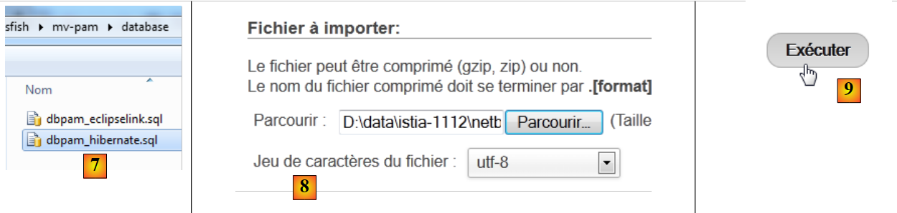 |
- في [7,8]، نختار البرنامج النصي SQL،
- في [9]، يتم تنفيذه،
 |
- في [10]، تم إنشاء الجداول. ومحتواها كما يلي:
الجدول EMPLOYES

الجدول INDEMNITES

جدول
الجدول COTISATIONS

5.6. التنفيذ JPA
5.6.1. الطبقة JPA / Hibernate
سنقوم بتكوين الطبقة JPA في البيئة التالية:
 |
سيعمل برنامج وحدة التحكم مع قاعدة البيانات. ولذلك، يجب:
- وجود قاعدة بيانات،
- وجود برنامج التشغيل JDBC لـ SGBD، هنا MySQL،
- تنفيذ الطبقة JPA باستخدام Hibernate،
- كتابة برنامج وحدة التحكم.
نقوم بإنشاء مشروع Maven [mv-pam-jpa-hibernate] [1]:
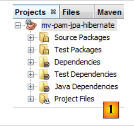 |
في بنية تطبيقنا، نحتاج إلى العناصر التالية:
- قاعدة البيانات،
- برنامج التشغيل JDBC لـ SGBD MySQL،
- طبقة JPA / Hibernate (الكيانات والتكوين)،
- برنامج وحدة التحكم للاختبار.
5.6.1.1. قاعدة البيانات
لنقم أولاً بإنشاء قاعدة البيانات الفارغة. نقوم بتشغيل WampServer ونستخدم الأداة PhpMyAdmin [1]:
 |
- في [2]، نختار الخيار [Bases de données]،
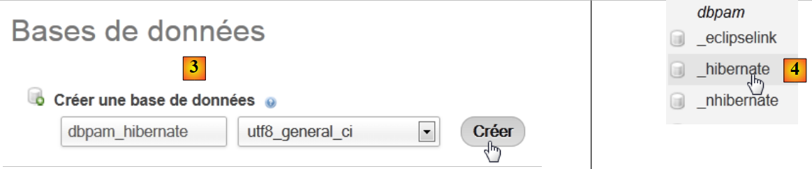 |
- في [3]، يتم إنشاء قاعدة بيانات [dbpam_hibernate]،
- في [4]، قاعدة البيانات التي تم إنشاؤها.
5.6.1.2. تكوين الطبقة JPA
يتم الربط بين الطبقة JDBC وقاعدة البيانات من خلال الملف [persistence.xml] الذي يقوم بتكوين الطبقة JPA. يمكن إنشاء هذا الملف باستخدام NetBeans:
 |
- في علامة التبويب [services] [1]، يتم الاتصال بقاعدة البيانات باستخدام برنامج التشغيل JDBC من MySQL [2]،
- في [3]، اسم قاعدة البيانات التي نريد الاتصال بها.
- في [4]، URL JDBC للقاعدة،
- في [5]، يتم الاتصال باسم root بدون كلمة مرور،
- في [6]، يمكن اختبار الاتصال،
- في [7]، نجح الاتصال.
 |
- يظهر الاتصال في [8] و [9]،
- في [10]، نضيف عنصرًا جديدًا إلى المشروع،
 |
- في [11] يتم اختيار الفئة [Persistence] وفي [12] العنصر [Persistence Unit]،
- في [13]، نسمي وحدة الاستمرارية هذه،
- في [14]، نختار تطبيق Hibernate،
- في [15]، نحدد الاتصال الذي أنشأناه للتو بقاعدة البيانات MySQL،
- في [16]، نحدد أنه عند إنشاء مثيل الطبقة JPA، يجب أن تقوم هذه الطبقة بإنشاء (create) الجداول المطابقة للكيانات JPA في المشروع.
ينتج عن انتهاء المساعد ملف [persistence.xml]:
 |
- يظهر الملف في فرع جديد من المشروع، في مجلد [META-INF] [1]،
- والذي يتوافق مع المجلد [src/main/resources] في المشروع [2,3] .
محتواه هو كما يلي:
<?xml version="1.0" encoding="UTF-8"?>
<persistence version="2.0" xmlns="http://java.sun.com/xml/ns/persistence" xmlns:xsi="http://www.w3.org/2001/XMLSchema-instance" xsi:schemaLocation="http://java.sun.com/xml/ns/persistence http://java.sun.com/xml/ns/persistence/persistence_2_0.xsd">
<persistence-unit name="mv-pam-jpa-hibernatePU" transaction-type="RESOURCE_LOCAL">
<provider>org.hibernate.ejb.HibernatePersistence</provider>
<properties>
<property name="javax.persistence.jdbc.url" value="jdbc:mysql://localhost:3306/dbpam_hibernate"/>
<property name="javax.persistence.jdbc.password" value=""/>
<property name="javax.persistence.jdbc.driver" value="com.mysql.jdbc.Driver"/>
<property name="javax.persistence.jdbc.user" value="root"/>
<property name="hibernate.cache.provider_class" value="org.hibernate.cache.NoCacheProvider"/>
<property name="hibernate.hbm2ddl.auto" value="create-drop"/>
</properties>
</persistence-unit>
</persistence>
- السطر 3: اسم وحدة الاستمرارية ونوع المعاملات. يشير RESOURCE_LOCAL إلى أن المشروع يدير المعاملات بنفسه. وهنا يجب أن يقوم برنامج وحدة التحكم بذلك،
- السطر 4: التنفيذ المستخدم JPA هو Hibernate،
- الأسطر 6-9: خصائص JDBC للاتصال بقاعدة البيانات،
- السطر 11: يطلب إنشاء الجداول المطابقة للكيانات JPA. في الواقع، يقوم Netbeans هنا بإنشاء تكوين خاطئ. يجب أن يكون التكوين كما يلي:
<property name="hibernate.hbm2ddl.auto" value="create"/>
باستخدام الخيار create، يقوم Hibernate، عند إنشاء مثيل الطبقة JPA، بحذف ثم إنشاء الجداول المطابقة للكيانات JPA. تقوم الخيار create-drop بنفس الشيء، ولكن عند انتهاء عمر الطبقة JPA، تقوم بحذف جميع الجداول. هناك خيار آخر:
<property name="hibernate.hbm2ddl.auto" value="update"/>
يُنشئ هذا الخيار الجداول إذا لم تكن موجودة، لكنه لا يحذفها إذا كانت موجودة بالفعل.
سنضيف ثلاث خصائص أخرى إلى تكوين Hibernate:
<property name="hibernate.show_sql" value="true"/>
<property name="hibernate.format_sql" value="true"/>
<property name="use_sql_comments" value="true"/>
وهي تطلب من Hibernate عرض الأوامر SQL التي يرسلها إلى قاعدة البيانات. وبالتالي، فإن الملف الكامل هو كما يلي:
<?xml version="1.0" encoding="UTF-8"?>
<persistence version="2.0" xmlns="http://java.sun.com/xml/ns/persistence" xmlns:xsi="http://www.w3.org/2001/XMLSchema-instance" xsi:schemaLocation="http://java.sun.com/xml/ns/persistence http://java.sun.com/xml/ns/persistence/persistence_2_0.xsd">
<persistence-unit name="mv-pam-jpa-hibernatePU" transaction-type="RESOURCE_LOCAL">
<provider>org.hibernate.ejb.HibernatePersistence</provider>
<class>jpa.Cotisation</class>
<class>jpa.Employe</class>
<class>jpa.Indemnite</class>
<properties>
<property name="javax.persistence.jdbc.url" value="jdbc:mysql://localhost:3306/dbpam_hibernate"/>
<property name="javax.persistence.jdbc.password" value=""/>
<property name="javax.persistence.jdbc.driver" value="com.mysql.jdbc.Driver"/>
<property name="javax.persistence.jdbc.user" value="root"/>
<property name="hibernate.cache.provider_class" value="org.hibernate.cache.NoCacheProvider"/>
<property name="hibernate.hbm2ddl.auto" value="create"/>
<property name="hibernate.show_sql" value="true"/>
<property name="hibernate.format_sql" value="true"/>
<property name="use_sql_comments" value="true"/>
</properties>
</persistence-unit>
</persistence>
5.6.1.3. التبعيات
لنعد إلى بنية المشروع:
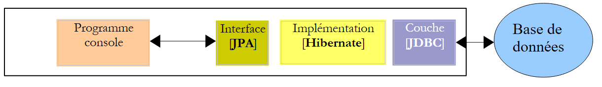 |
لقد قمنا بتكوين الطبقة JPA عبر الملف [persistence.xml]. وكان التنفيذ المختار هو Hibernate. وقد أدى ذلك إلى ظهور تبعيات في المشروع:
 |
تعود هذه التبعيات إلى تضمين Hibernate في المشروع. يتعين علينا إضافة تبعية أخرى، وهي تبعية برنامج التشغيل JDBC لـ MySQL الذي ينفذ الطبقة JDBC من البنية. نقوم بتطوير الملف [pom.xml] بالطريقة التالية:
<dependencies>
<dependency>
<groupId>junit</groupId>
<artifactId>junit</artifactId>
<version>3.8.1</version>
<scope>test</scope>
</dependency>
<dependency>
<groupId>mysql</groupId>
<artifactId>mysql-connector-java</artifactId>
<version>5.1.6</version>
</dependency>
<dependency>
<groupId>org.hibernate</groupId>
<artifactId>hibernate-entitymanager</artifactId>
<version>4.1.2</version>
</dependency>
...
<dependency>
<groupId>org.hibernate.common</groupId>
<artifactId>hibernate-commons-annotations</artifactId>
<version>4.0.1.Final</version>
</dependency>
</dependencies>
تضيف الأسطر 8-12 تبعية برنامج التشغيل JDBC من MySQL.
5.6.1.4. الكيانات JPA
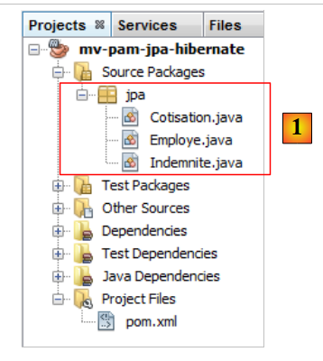 |
السؤال: باتباع الخطوات الواردة في المثال في الفقرة 4.4، قم بإنشاء الكيانات [Cotisation, Indemnite, Employe].
ملاحظات:
- ستكون الكيانات جزءًا من حزمة تسمى [jpa]،
- سيكون لكل كيان رقم إصدار،
- إذا كانت هناك كيانان مرتبطان بعلاقة، فسيتم إنشاء العلاقة الرئيسية @ManyToOne فقط. ولن يتم إنشاء العلاقة العكسية @OneToMany.
5.6.1.5. كود الفئة الرئيسية
نقوم بتضمين الكيانات JPA التي تم تطويرها مسبقًا [1] في المشروع:
 |
ثم نضيف [2]، الفئة [main.Main] التالية:
package main;
import javax.persistence.EntityManager;
import javax.persistence.EntityManagerFactory;
import javax.persistence.Persistence;
public class Main {
public static void main(String[] args) {
// يكفي إنشاء Entity Manager لبناء الطبقة JPA
EntityManagerFactory emf = Persistence.createEntityManagerFactory("mv-pam-jpa-hibernatePU");
EntityManager em=emf.createEntityManager();
// تحرير الموارد
em.close();
emf.close();
}
}
- السطر 10: نقوم بإنشاء EntityManagerFactory لوحدة الاستمرارية المسماة [mv-pam-jpa-hibernatePU]. يأتي هذا الاسم من الملف [persistence.xml]:
<persistence-unit name="mv-pam-jpa-hibernatePU" transaction-type="RESOURCE_LOCAL">
...
</persistence-unit>
- السطر 12: يتم إنشاء EntityManager. يؤدي هذا الإنشاء إلى إنشاء الطبقة JPA. سيتم استخدام الملف [persistence.xml] وبالتالي سيتم إنشاء جداول قاعدة البيانات،
- السطران 14-15: يتم تحرير الموارد.
5.6.1.6. Tests
لنعد إلى بنية مشروعنا:
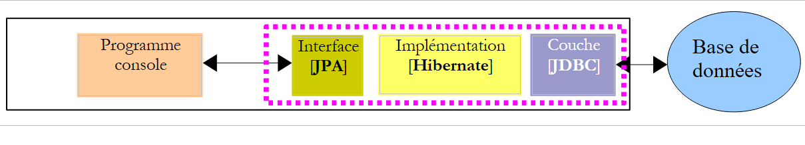 |
تم تنفيذ جميع الطبقات. نقوم بتشغيل المشروع [2].
 |
نتائج وحدة التحكم هي كما يلي:
1 2 3 4 5 6 7 8 9 10 11 12 13 14 15 16 17 18 19 20 21 22 23 24 25 26 27 28 29 30 31 32 33 34 35 36 37 38 39 40 41 42 43 44 45 46 47 48 49 50 51 52 53 54 55 56 57 58 59 60 61 62 63 64 65 66 67 68 69 70 71 72 73 74 75 76 77 78 79 80 81 82 83 84 85 86 87 88 89 90 91 92 93 94 95 96 97 98 99 100 101 102 103 104 105 | |
لا توجد في وحدة التحكم سوى سجلات Hibernate لأن البرنامج الذي تم تنفيذه لا يقوم بأي شيء سوى إنشاء مثيل للطبقة JPA. تجدر الإشارة إلى النقاط التالية:
- السطر 43: يحاول Hibernate حذف المفتاح الأجنبي من الجدول [EMPLOYES]،
- الأسطر 51-55: حذف الجداول الثلاثة،
- السطر 57: إنشاء الجدول [COTISATIONS]،
- السطر 67: إنشاء الجدول [EMPLOYES]،
- السطر 80: إنشاء الجدول [INDEMNITES]،
- السطر 91: إنشاء المفتاح الخارجي للجدول [EMPLOYES].
في Netbeans، يمكن رؤية الجداول في الاتصال الذي تم إنشاؤه مسبقًا:
 |
تعتمد الجداول التي تم إنشاؤها على كل من تنفيذ الطبقة JPA المستخدمة و SGBD المستخدمة. وبالتالي، فإن تنفيذ JPA / EclipseLink مع نفس قاعدة البيانات يمكن أن يولد جداول مختلفة. وهذا ما سنراه الآن.
5.6.2. الطبقة JPA / EclipseLink
سنقوم بإنشاء مشروع Maven جديد في البيئة التالية:
 |
سنتبع الخطوات الموضحة في الفقرة السابقة:
- إنشاء قاعدة بيانات MySQL [dbpam_eclipselink]. سنستخدم البرنامج النصي [dbpam_eclipselink.sql] لإنشائها،
- إنشاء ملف [persistence.xml] للمشروع. أخذ التنفيذ JPA 2.0 EclipseLink،
- أضف في التبعيات التي تم إنشاؤها تبعية برنامج التشغيل JDBC من MySQL،
- أضف الكيانات JPA وبرنامج وحدة التحكم،
- إجراء الاختبارات.
سيكون ملف [persistence.xml] كما يلي:
<?xml version="1.0" encoding="UTF-8"?>
<persistence version="2.0" xmlns="http://java.sun.com/xml/ns/persistence" xmlns:xsi="http://www.w3.org/2001/XMLSchema-instance" xsi:schemaLocation="http://java.sun.com/xml/ns/persistence http://java.sun.com/xml/ns/persistence/persistence_2_0.xsd">
<persistence-unit name="pam-jpa-eclipselinkPU" transaction-type="RESOURCE_LOCAL">
<provider>org.eclipse.persistence.jpa.PersistenceProvider</provider>
<class>jpa.Cotisation</class>
<class>jpa.Employe</class>
<class>jpa.Indemnite</class>
<properties>
<property name="eclipselink.target-database" value="MySQL"/>
<property name="javax.persistence.jdbc.url" value="jdbc:mysql://localhost:3306/dbpam_eclipselink"/>
<property name="javax.persistence.jdbc.password" value=""/>
<property name="javax.persistence.jdbc.driver" value="com.mysql.jdbc.Driver"/>
<property name="javax.persistence.jdbc.user" value="root"/>
<property name="eclipselink.logging.level" value="FINE"/>
<property name="eclipselink.ddl-generation" value="drop-and-create-tables"/>
</properties>
</persistence-unit>
</persistence>
- تم إنشاء الخصائص 9-13 بواسطة مساعد Netbeans،
- السطر 14: تسمح لنا هذه الخاصية بتحديد مستوى سجلات EclipseLink. يتيح لنا مستوى FINE معرفة الأوامر SQL التي سيصدرها EclipseLink على قاعدة البيانات،
- السطر 15: عند إنشاء مثيل الطبقة JPA / EclipseLink، سيتم إزالة جداول كيانات JPA ثم إنشاؤها.
نتائج وحدة التحكم التي تم الحصول عليها هي كما يلي:
- الأسطر 26-30: الاتصال بقاعدة البيانات MySQL،
- الأسطر 31-34: تأكيد نجاح الاتصال،
- السطر 36: حذف المفتاح الأجنبي من الجدول [EMPLOYES]،
- السطر 37: حذف الجدول [COTISATIONS]،
- السطر 38: إنشاء الجدول [COTISATIONS]. تجدر الإشارة إلى أن المفتاح الأساسي ID لا يحتوي على السمة MySQL auto_increment. وهذا يعني أن MySQL ليس هو الذي يولد قيم المفتاح الأساسي،
- السطر 39: حذف الجدول [EMPLOYES]،
- السطر 40: إنشاء الجدول [EMPLOYES]. لا يحتوي مفتاحه الأساسي ID على السمة MySQL auto_increment،
- السطر 41: حذف الجدول [INDEMNITES]،
- السطر 42: إنشاء الجدول [INDEMNITES]. لا يحتوي مفتاحه الأساسي ID على السمة MySQL auto_increment،
- السطر 43: إنشاء المفتاح الخارجي للجدول [EMPLOYES] إلى الجدول [INDEMNITES]،
- السطر 44: إنشاء جدول [SEQUENCE]. سيتم استخدامه لتوليد المفاتيح الأساسية للجدول الثلاثة السابقة،
- السطر 47: حدث استثناء لأن هذه الجدولة كانت موجودة بالفعل،
- الأسطر 51-53: تهيئة الجدول [SEQUENCE].
يمكن التحقق من وجود الجداول التي تم إنشاؤها في Netbeans [1]:
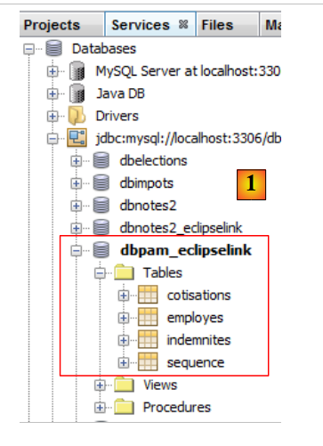 |
لذلك، انطلاقًا من نفس الكيانات JPA، لا تولد عمليات التنفيذ JPA و Hibernate و EclipseLink نفس الجداول. في بقية الوثيقة، عندما يكون التنفيذ JPA المستخدم هو:
- Hibernate، فسيتم استخدام قاعدة البيانات [dbpam_hibernate]،
- EclipseLink، سيتم استخدام قاعدة البيانات [dbpam_eclipselink].
5.6.3. المهمة المطلوبة
باتباع نفس الخطوات السابقة،
- قم بإنشاء واختبار مشروع [mv-pam-jpa-hibernate-oracle] باستخدام تطبيق JPA Hibernate و SGBD Oracle،
- قم بإنشاء واختبار مشروع [mv-pam-jpa-hibernate-mssql] باستخدام تطبيق JPA Hibernate و SGBD SQL server،
- إنشاء واختبار مشروع [mv-pam-jpa-eclipselink-oracle] باستخدام تطبيق JPA و EclipseLink وخادم Oracle،
- إنشاء واختبار مشروع [mv-pam-jpa-eclipselink-mssql] باستخدام تطبيق JPA و EclipseLink وخادم SGBD و SQL،
5.6.4. Lazy أم Eager؟
لنعد إلى تعريف محتمل للكيان [Employe]:
package jpa;
...
@Entity
@Table(name="EMPLOYES")
public class Employe implements Serializable {
@Id
@GeneratedValue(strategy = GenerationType.AUTO)
private Long id;
@Version
@Column(name="VERSION",nullable=false)
private int version;
@Column(name="SS", nullable=false, unique=true, length=15)
private String SS;
@Column(name="NOM", nullable=false, length=30)
private String nom;
@Column(name="PRENOM", nullable=false, length=20)
private String prenom;
@Column(name="ADRESSE", nullable=false, length=50)
private String adresse;
@Column(name="VILLE", nullable=false, length=30)
private String ville;
@Column(name="CP", nullable=false, length=5)
private String codePostal;
@ManyToOne(fetch= FetchType.LAZY)
@JoinColumn(name="INDEMNITE_ID",nullable=false)
private Indemnite indemnite;
...
}
تحدد الأسطر 27-29 المفتاح الخارجي للجدول [EMPLOYES] إلى الجدول [INDEMNITES]. يحدد السمة fetch في السطر 27 استراتيجية البحث للحقل indemnite في السطر 29. هناك وضعان:
- FetchType.LAZY: عند البحث عن موظف، لا يتم استرجاع التعويض المقابل له. سيتم استرجاعه عند الإشارة إلى الحقل [Employe].indemnite لأول مرة.
- FetchType.EAGER: عند البحث عن موظف، يتم عرض التعويض الذي يخصه. هذا هو الوضع الافتراضي عندما لا يتم تحديد أي وضع.
لفهم فائدة الخيار FetchType.LAZY، يمكننا أخذ المثال التالي. يتم عرض قائمة بالموظفين بدون التعويضات في صفحة ويب مع رابط [Details]. عند النقر على هذا الرابط، يتم عرض تعويضات الموظف المحدد. نلاحظ أنه:
- لعرض الصفحة الأولى، لا نحتاج إلى الموظفين مع بدلاتهم. وبالتالي، فإن الوضع FetchType.LAZY مناسب،
- ولعرض الصفحة الثانية مع التفاصيل، يجب إجراء استعلام إضافي إلى قاعدة البيانات للحصول على بدلات الموظف المحدد.
يمنع الوضع FetchType.LAZY استدعاء الكثير من البيانات التي لا تحتاجها التطبيق في الوقت الحالي. لنلقِ نظرة على مثال.
يتم تكرار المشروع [mv-pam-jpa-hibernate]:
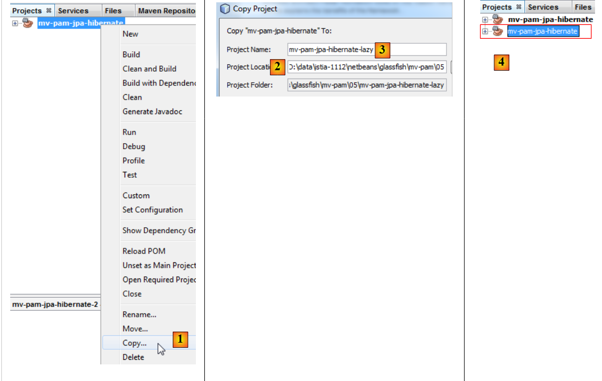 |
- في [1]، يتم نسخ المشروع،
- في [2]، نحدد مجلد النسخة وفي [3] نحدد اسمها،
- في [4]، يحمل المشروع الجديد نفس اسم المشروع القديم. نقوم بتغيير ذلك:
 |
- إلى [1]، نعيد تسمية المشروع،
- إلى [2]، نعيد تسمية المشروع و artifactId،
- إلى [3]، المشروع الجديد.
نقوم بتعديل البرنامج [Main.java] بالطريقة التالية:
package main;
import java.util.List;
import javax.persistence.EntityManager;
import javax.persistence.EntityManagerFactory;
import javax.persistence.Persistence;
import jpa.Employe;
public class Main {
// الاستعلام JPQL أدناه يعرض الموظف
// المفتاح الأجنبي [Employe].indemnite موجود في FetchType.LAZY
public static void main(String[] args) {
// يكفي إنشاء Entity Manager لبناء الطبقة JPA
EntityManagerFactory emf = Persistence.createEntityManagerFactory("pam-jpa-hibernatePU");
// المحاولة الأولى
EntityManager em = emf.createEntityManager();
Employe employe = (Employe) em.createQuery("select e from Employe e where e.nom=:nom").setParameter("nom", "Jouveinal").getSingleResult();
em.close();
// يتم عرض الموظف
try {
System.out.println(employe);
} catch (Exception ex) {
System.out.println(ex);
}
// المحاولة الثانية
em = emf.createEntityManager();
employe = (Employe) em.createQuery("select e from Employe e left join fetch e.indemnite where e.nom=:nom").setParameter("nom", "Jouveinal").getSingleResult();
// تحرير الموارد
em.close();
// عرض الموظف
try {
System.out.println(employe);
} catch (Exception ex) {
System.out.println(ex);
}
// تحرير الموارد
emf.close();
}
}
- السطر 15: نقوم بإنشاء EntityManagerFactory من الطبقة JPA،
- السطر 17: نحصل على EntityManager الذي يسمح لنا بالتفاعل مع الطبقة JPA،
- السطر 18: نطلب الموظف الذي يحمل الاسم Jouveinal،
- السطر 19: نغلق EntityManager. يؤدي ذلك إلى إغلاق سياق الاستمرارية.
- السطر 22: نعرض الموظف الذي تم استلامه.
الفئة [Employe] هي كما يلي:
package jpa;
...
@Entity
@Table(name="EMPLOYES")
public class Employe implements Serializable {
@Id
@GeneratedValue(strategy = GenerationType.AUTO)
private Long id;
@Version
@Column(name="VERSION",nullable=false)
private int version;
@Column(name="SS", nullable=false, unique=true, length=15)
private String SS;
@Column(name="NOM", nullable=false, length=30)
private String nom;
@Column(name="PRENOM", nullable=false, length=20)
private String prenom;
@Column(name="ADRESSE", nullable=false, length=50)
private String adresse;
@Column(name="VILLE", nullable=false, length=30)
private String ville;
@Column(name="CP", nullable=false, length=5)
private String codePostal;
@ManyToOne(fetch= FetchType.LAZY)
@JoinColumn(name="INDEMNITE_ID",nullable=false)
private Indemnite indemnite;
/**
* Returns a string representation of the object. This implementation constructs
* that representation based on the id fields.
* @return a string representation of the object.
*/
@Override
public String toString() {
return "jpa.Employe[id=" + getId()
+ ",version="+getVersion()
+",SS="+getSS()
+ ",nom="+getNom()
+ ",prenom="+getPrenom()
+ ",adresse="+getAdresse()
+",ville="+getVille()
+",code postal="+getCodePostal()
+",indice="+getIndemnite().getIndice()
+"]";
}
...
}
- السطر 27: يتم إعادة الحقل indemnite إلى الوضع LAZY،
- السطر 47: يستخدم الحقل indemnite. إذا تم استدعاء الطريقة toString في حين أن الحقل indemnite لم يتم إعادته بعد، فسيتم إعادته في ذلك الوقت. إلا إذا تم إغلاق سياق الاستمرارية كما في المثال.
لنعد إلى كود [Main]:
- الأسطر 21-25: من المفترض أن تحدث استثناء. في الواقع، سيتم استدعاء الطريقة toString. وستستخدم الحقل indemnite. وسيتم البحث عن هذا الحقل. ونظرًا لأن سياق الاستمرارية قد أُغلق، فإن الكيان [Employe] الذي تم إرجاعه لم يعد موجودًا، ومن هنا تأتي الاستثناء.
- السطر 27: يتم إنشاء كيان جديد EntityManager،
- السطر 28: يتم طلب الموظف Jouveinal مع طلب صريح في الاستعلام JPQL للبدل المرتبط به. هذا الطلب الصريح ضروري لأن طريقة البحث عن هذا البدل هي LAZY،
- السطر 30: يتم إغلاق EntityManager،
- الأسطر 32-36: يتم إعادة عرض الموظف. لا ينبغي أن يكون هناك أي استثناء.
لتنفيذ المشروع، نحتاج إلى قاعدة بيانات مملوءة. سننشئها باتباع الخطوات الواردة في الفقرة 5.5. علاوة على ذلك، يجب تعديل الملف [persistence.xml]:
<?xml version="1.0" encoding="UTF-8"?>
<persistence version="2.0" xmlns="http://java.sun.com/xml/ns/persistence" xmlns:xsi="http://www.w3.org/2001/XMLSchema-instance" xsi:schemaLocation="http://java.sun.com/xml/ns/persistence http://java.sun.com/xml/ns/persistence/persistence_2_0.xsd">
<persistence-unit name="mv-pam-jpa-hibernatePU" transaction-type="RESOURCE_LOCAL">
<provider>org.hibernate.ejb.HibernatePersistence</provider>
<class>jpa.Cotisation</class>
<class>jpa.Employe</class>
<class>jpa.Indemnite</class>
<properties>
<property name="javax.persistence.jdbc.url" value="jdbc:mysql://localhost:3306/dbpam_hibernate"/>
<property name="javax.persistence.jdbc.password" value=""/>
<property name="javax.persistence.jdbc.driver" value="com.mysql.jdbc.Driver"/>
<property name="javax.persistence.jdbc.user" value="root"/>
<property name="hibernate.cache.provider_class" value="org.hibernate.cache.NoCacheProvider"/>
</properties>
</persistence-unit>
</persistence>
- تمت إزالة الخيار الذي كان ينشئ الجداول. قاعدة البيانات موجودة بالفعل ومملوءة،
- وقد أزلنا الخيارات التي كانت تجعل Hibernate يسجل الأوامر SQL التي كان يرسلها إلى قاعدة البيانات.
يؤدي تنفيذ المشروع إلى ظهور العرضين التاليين في وحدة التحكم:
- السطر 1: الاستثناء الذي حدث عند الحاجة إلى البحث عن التعويض المفقود في حين أن الجلسة كانت مغلقة. نرى أن التعويض لم يتم إرجاعه بسبب الوضع LAZY،
- السطر 2: الموظف مع بدلته التي تم الحصول عليها من خلال استعلام تجاوز الوضع LAZY.
5.6.5. المهام المطلوبة
باتباع نهج مشابه للنهج الذي تم اتباعه للتو، قم بإنشاء مشروع [mv-pam-pa-eclipselink-lazy] يوضح سلوك EclipseLink في مواجهة الوضع LAZY.
ونحصل على النتائج التالية:
في الوضع LAZY، أعادت الاستعلامات التعويض إلى الموظف. عند البحث على الإنترنت عن هذا الخطأ، نكتشف أن التعليق [FetchType.LAZY] (السطر 1):
@ManyToOne(fetch= FetchType.LAZY)
@JoinColumn(name="INDEMNITE_ID",nullable=false)
private Indemnite indemnite;
ليس أمرًا بل رغبة. ولا يُلزم المُنفِّذ JPA باتباعه. نرى إذن أن الكود يصبح أحيانًا معتمدًا على التنفيذ JPA المستخدم. من الممكن تكوين EclipseLink ليقدم السلوك المتوقع لوضع LAZY.
5.6.6. للمتابعة
هيكل التطبيق المراد إنشاؤه هو كما يلي:
 |
في بقية الوثيقة، سنقوم بنسخ مشروع Maven [mv-pam-jpa-hibernate] في مشروع [mv-pam-spring-hibernate] [1, 2, 3]:
 |
- ثم نعيد تسمية المشروع الجديد [4, 5, 6].
سنقوم بتغيير تبعيات المشروع الجديد. يصبح ملف [pom.xml] كما يلي:
<project xmlns="http://maven.apache.org/POM/4.0.0" xmlns:xsi="http://www.w3.org/2001/XMLSchema-instance"
xsi:schemaLocation="http://maven.apache.org/POM/4.0.0 http://maven.apache.org/xsd/maven-4.0.0.xsd">
<modelVersion>4.0.0</modelVersion>
<groupId>istia.st</groupId>
<artifactId>mv-pam-spring-hibernate</artifactId>
<version>1.0-SNAPSHOT</version>
<packaging>jar</packaging>
<name>mv-pam-spring-hibernate</name>
<url>http://maven.apache.org</url>
<repositories>
<repository>
<url>http://repo1.maven.org/maven2/</url>
<id>swing-layout</id>
<layout>default</layout>
<name>Repository for library Library[swing-layout]</name>
</repository>
</repositories>
<properties>
<project.build.sourceEncoding>UTF-8</project.build.sourceEncoding>
</properties>
<dependencies>
<dependency>
<groupId>junit</groupId>
<artifactId>junit</artifactId>
<version>4.10</version>
<scope>test</scope>
<type>jar</type>
</dependency>
<dependency>
<groupId>commons-dbcp</groupId>
<artifactId>commons-dbcp</artifactId>
<version>1.2.2</version>
</dependency>
<dependency>
<groupId>commons-pool</groupId>
<artifactId>commons-pool</artifactId>
<version>1.6</version>
</dependency>
<dependency>
<groupId>org.springframework</groupId>
<artifactId>spring-tx</artifactId>
<version>3.1.1.RELEASE</version>
<type>jar</type>
</dependency>
<dependency>
<groupId>org.springframework</groupId>
<artifactId>spring-beans</artifactId>
<version>3.1.1.RELEASE</version>
<type>jar</type>
</dependency>
<dependency>
<groupId>org.springframework</groupId>
<artifactId>spring-context</artifactId>
<version>3.1.1.RELEASE</version>
<type>jar</type>
</dependency>
<dependency>
<groupId>org.springframework</groupId>
<artifactId>spring-orm</artifactId>
<version>3.1.1.RELEASE</version>
<type>jar</type>
</dependency>
<dependency>
<groupId>org.hibernate</groupId>
<artifactId>hibernate-entitymanager</artifactId>
<version>4.1.2</version>
<type>jar</type>
</dependency>
<dependency>
<groupId>mysql</groupId>
<artifactId>mysql-connector-java</artifactId>
<version>5.1.6</version>
</dependency>
<dependency>
<groupId>org.swinglabs</groupId>
<artifactId>swing-layout</artifactId>
<version>1.0.3</version>
</dependency>
</dependencies>
</project>
- الأسطر 25-31: التبعية لاختبارات JUnit،
- الأسطر 32-41: التبعيات لمجموعة اتصالات Apache DBCP،
- الأسطر 42-65: التبعيات لإطار عمل Spring،
- الأسطر 67-71: التبعيات لتنفيذ JPA / Hibernate،
- الأسطر 72-76: التبعية لبرنامج التشغيل JDBC الخاص بـ MySQL،
- الأسطر 77-81: التبعية لواجهة Swing. يتم إضافة هذه التبعية تلقائيًا بواسطة Netbeans عند إضافة واجهة Swing إلى المشروع.
بالإضافة إلى ذلك، سيتم إنشاء قاعدتي MySQL:
- [dbpam_hibernate] من البرنامج النصي [dbpam_hibernate.sql]،
- [dbpam_eclipselink] من البرنامج النصي [dbpam_eclipselink.sql]،
5.7. : واجهات الطبقات [metier] و [DAO]
لنعد إلى بنية التطبيق:
 |
في البنية أعلاه، ما هي الواجهة التي يجب أن توفرها الطبقة [DAO] للطبقة [metier] وما هي الواجهة التي يجب أن توفرها الطبقة [metier] للطبقة [ui]؟ تتمثل الطريقة الأولى لتحديد واجهات الطبقات المختلفة في دراسة حالات الاستخدام المختلفة للتطبيق. لدينا هنا حالتان، وفقًا لواجهة المستخدم المختارة: وحدة التحكم أو النموذج الرسومي.
دعونا ندرس طريقة استخدام تطبيق وحدة التحكم:
يتلقى التطبيق ثلاث معلومات من المستخدم (انظر السطر 1 أعلاه)
- رقم الضمان الاجتماعي للمربية
- عدد ساعات العمل في الشهر
- عدد أيام العمل في الشهر
بناءً على هذه المعلومات وغيرها من المعلومات المسجلة في ملفات التكوين، يعرض التطبيق المعلومات التالية:
- الأسطر 4-6: القيم التي تم إدخالها
- السطور 8-10: المعلومات المتعلقة بالموظف الذي تم إدخال رقم الضمان الاجتماعي الخاص به
- الأسطر 12-14: معدلات الاشتراكات الاجتماعية المختلفة
- السطور 16-17: التعويضات المختلفة المدفوعة للمربية
- الأسطر 19-24: عناصر كشف راتب المربية
يجب توفير عدد من المعلومات من الطبقة [metier] إلى الطبقة [ui]:
- المعلومات المتعلقة بمربية الأطفال المحددة برقم الضمان الاجتماعي الخاص بها. توجد هذه المعلومات في الجدول [EMPLOYES]. وهذا يسمح بعرض الأسطر 6-8.
- مبالغ مختلف معدلات الاشتراكات الاجتماعية التي يجب خصمها من الراتب الإجمالي. توجد هذه المعلومات في الجدول [COTISATIONS]. وهذا يسمح بعرض الأسطر 10-12.
- مبالغ التعويضات المختلفة المرتبطة بوظيفة مربية الأطفال. توجد هذه المعلومات في الجدول [INDEMNITES]. وهذا يسمح بعرض الأسطر 14-15.
- العناصر المكونة للراتب المعروضة في الأسطر 18-22.
من هذا، يمكننا تحديد كتابة أولية للواجهة [IMetier] المقدمة من الطبقة [metier] إلى الطبقة [ui]:
- السطر 1: يتم وضع عناصر الطبقة [metier] في الحزمة [metier]
- السطر 5: تأخذ الطريقة [ calculerFeuilleSalaire ] كمعلمات المعلومات الثلاث التي حصلت عليها الطبقة [ui] وتُرجع كائنًا من النوع [FeuilleSalaire] يحتوي على المعلومات التي ستعرضها الطبقة [ui] على وحدة التحكم. قد تكون فئة [FeuilleSalaire] كما يلي:
- السطر 9: الموظف المعني بكشوفة الراتب - المعلومات رقم 1 المعروضة بواسطة الطبقة [ui]
- السطر 10: معدلات الاشتراكات المختلفة - المعلومات رقم 2 المعروضة بواسطة الطبقة [ui]
- السطر 11: التعويضات المختلفة المرتبطة بمؤشر الموظف - المعلومات رقم 3 المعروضة بواسطة الطبقة [ui]
- السطر 12: العناصر المكونة لراتبه - المعلومات رقم 4 المعروضة بواسطة الطبقة [ui]
يظهر استخدام ثانٍ للطبقة [métier] مع الواجهة الرسومية:
 |
نرى أعلاه أن القائمة المنسدلة [1, 2] تعرض جميع الموظفين. يجب طلب هذه القائمة من الطبقة [métier]. تتطور واجهة الخاصة بها على النحو التالي:
- السطر [10]: الطريقة التي ستسمح للطبقة [ui] بطلب قائمة بجميع الموظفين من الطبقة [métier].
لا يمكن للطبقة [metier] تهيئة حقول [Employe, Cotisation, Indemnite] الخاصة بالكائن [FeuilleSalaire] المذكور أعلاه إلا من خلال الاستعلام عن الطبقة [DAO]، لأن هذه المعلومات موجودة في جداول قاعدة البيانات. وينطبق الأمر نفسه على الحصول على قائمة بجميع الموظفين. يمكن إنشاء واجهة [DAO] واحدة تدير الوصول إلى الكيانات الثلاثة [Employe, Cotisation, Indemnite]. لكننا قررنا هنا إنشاء واجهة [DAO] لكل كيان.
وستكون الواجهة [DAO] للوصول إلى الكيانات [Cotisation] من الجدول [COTISATIONS] كما يلي:
- السطر 6، تدير الواجهة [ICotisationDao] الوصول إلى الكيان [Cotisation] وبالتالي إلى الجدول [COTISATIONS] في قاعدة البيانات. لا يحتاج تطبيقنا سوى إلى الطريقة [findAll] في السطر 16 التي تسمح باسترداد كل محتوى الجدول [COTISATIONS]. أردنا هنا أن نضع أنفسنا في حالة أكثر عمومية حيث يتم تنفيذ جميع عمليات CRUD (إنشاء، قراءة، تحديث، حذف) على الكيان.
- السطر 8: تقوم الطريقة [create] بإنشاء كيان جديد [Cotisation]
- السطر 10: تقوم الطريقة [edit] بتعديل كيان [Cotisation] موجود
- السطر 12: تقوم الطريقة [destroy] بحذف كيان [Cotisation] موجود
- السطر 14: تسمح الطريقة [find] بالعثور على كيان [Cotisation] موجود عبر معرّفه id
- السطر 16: تعرض الطريقة [findAll] قائمة بجميع الكيانات [Cotisation] الموجودة
لنركز على توقيع الطريقة [create]:
تحتوي الطريقة create على معلمة cotisation من النوع Cotisation. يجب الاحتفاظ بالمعلمة cotisation، c.a.d. وهو موجود هنا في الجدول [COTISATIONS]. قبل هذا الاحتفاظ، تحتوي المعلمة cotisation على معرف id بدون قيمة. بعد الاحتفاظ، يكون للحقل id قيمة تمثل المفتاح الأساسي للسجل المضاف إلى الجدول [COTISATIONS]. وبالتالي، فإن المعلمة cotisation هي معلمة إدخال/إخراج للطريقة create. ولا يبدو من الضروري أن تقوم الطريقة create أيضًا بإرجاع المعلمة cotisation كنتيجة. نظرًا لأن الطريقة المستدعية تحتفظ بإشارة إلى الكائن [Cotisation cotisation]، فإنه في حالة تعديل هذا الكائن، فإنها تتمتع بإمكانية الوصول إلى الكائن المعدل نظرًا لوجود إشارة لها إليه. وبالتالي، يمكنها معرفة القيمة التي أعطتها الطريقة create للحقل id في الكائن [Cotisation cotisation]. وبالتالي، يمكن أن تكون توقيع الطريقة أبسط:
عند كتابة واجهة، من الجيد تذكر أنه يمكن استخدامها في سياقين مختلفين: local و distant. في السياق local، يتم تنفيذ الطريقة المستدعية والطريقة المستدعى إليها في نفس JVM:
 |
إذا كانت الطبقة [metier] تستدعي الطريقة create من الطبقة [DAO]، فإنها تحتوي بالفعل على مرجع للمعلمة [Cotisation cotisation] التي تمررها إلى الطريقة.
في سياق distant، يتم تنفيذ الطريقة المستدعية والطريقة المستدعى إليها في JVM مختلفة:
 |
فيما سبق، يتم تنفيذ الطبقة [metier] في JVM 1 والطبقة [DAO] في JVM 2 على جهازي كمبيوتر مختلفين. لا تتواصل الطبقتان مباشرة. بينهما توجد طبقة سنسميها طبقة الاتصال [1]. تتكون هذه الطبقة من طبقة إرسال [2] وطبقة استقبال [3]. لا يتعين على المطور عمومًا كتابة طبقات الاتصال هذه. يتم إنشاؤها تلقائيًا بواسطة أدوات برمجية. يتم كتابة الطبقة [metier] كما لو كانت تعمل في نفس JVM مثل الطبقة [DAO]. وبالتالي، لا يوجد أي تعديل في الكود.
آلية الاتصال بين الطبقة [metier] والطبقة [DAO] هي كما يلي:
- تستدعي الطبقة [metier] الطريقة create للطبقة [DAO] عن طريق تمرير المعلمة [Cotisation cotisation1]
- يتم تمرير هذه المعلمة في الواقع إلى طبقة الإرسال [2]. ستقوم هذه الطبقة بنقل قيمة المعلمة cotisation1 عبر الشبكة وليس مرجعها. يعتمد الشكل الدقيق لهذه القيمة على بروتوكول الاتصال المستخدم.
- ستسترد طبقة الاستقبال [3] هذه القيمة وتعيد بناء كائن [Cotisation cotisation2] منها، وهو صورة للمعلمة الأولية التي أرسلتها طبقة [metier]. لدينا الآن كائنان متطابقان (من حيث المحتوى) في طبقتين مختلفتين: cotisation1 و cotisation2.
- ستقوم طبقة الاستقبال بتمرير الكائن cotisation2 إلى الأسلوب create في الطبقة [DAO]، والتي ستقوم بدورها بتخزينه في قاعدة البيانات. بعد هذه العملية، تم تهيئة الحقل id للكائن cotisation2 بواسطة المفتاح الأساسي للسجل المضاف إلى الجدول [COTISATIONS]. هذا ليس هو الحال بالنسبة للكائن cotisation1 الذي تشير إليه الطبقة [metier]. إذا أردنا أن يكون للطبقة [metier] مرجع إلى الكائن cotisation2، فيجب إرساله إليها. لذلك، يتعين تغيير توقيع الأسلوب create للطبقة [DAO]:
- مع هذه التوقيع الجديد، ستُرجع الطريقة create الكائن الدائم cotisation2 كنتيجة. يتم إرجاع هذه النتيجة إلى طبقة الاستقبال [3] التي كانت قد استدعت الطبقة [DAO]. وستقوم هذه الطبقة بإرجاع قيمة (وليس مرجع) cotisation2 إلى طبقة الإرسال [2].
- ستسترد طبقة الإرسال [2] هذه القيمة وتعيد بناء كائن [Cotisation cotisation3] منها، وهو صورة للنتيجة التي تم إرجاعها بواسطة الطريقة create لطبقة [DAO].
- يتم عرض الكائن [Cotisation cotisation3] على طريقة الطبقة [metier] التي كان استدعاءها لطريقة create للطبقة [DAO] قد أطلق كل هذه الآلية. وبالتالي، يمكن للطبقة [metier] معرفة قيمة المفتاح الأساسي الممنوحة للكائن [Cotisation cotisation1] الذي طلبت استمراريته: وهي قيمة الحقل id في cotisation3.
البنية السابقة ليست الأكثر شيوعًا. نجد الطبقات [metier] و [DAO] بشكل أكثر تكرارًا في نفس JVM:
 |
في هذه البنية، يجب أن تعرض طرق الطبقة [metier] النتائج وليس طرق الطبقة [DAO]. ومع ذلك، فإن التوقيع التالي لطريقة create في الطبقة [DAO]:
تسمح لنا بعدم وضع أي افتراضات بشأن البنية التي تم تنفيذها فعليًا. إن استخدام توقيعات تعمل بغض النظر عن البنية المختارة، سواء كانت محلية أو بعيدة، يعني أنه في حالة قيام طريقة مستدعاة بتعديل بعض معلماتها:
- يجب أن تكون هذه المعلمات أيضًا جزءًا من نتيجة الطريقة المستدعاة
- يجب أن تستخدم الطريقة المستدعية نتيجة الطريقة المستدعاة وليس مراجع المعلمات المعدلة التي نقلتها إلى الطريقة المستدعاة.
وبذلك نتيح لأنفسنا إمكانية الانتقال من طبقة في بنية locale إلى بنية distante دون تعديل الكود. لنعيد النظر، في ضوء ذلك، في واجهة [ICotisationDao]:
- السطر 8: تمت معالجة حالة الطريقة create
- السطر 10: تستخدم الطريقة edit معلمتها [Cotisation cotisation1] لتحديث سجل الجدول [COTISATIONS] الذي له نفس المفتاح الأساسي للكائن cotisation. وتُرجع الكائن cotisation2 كصورة للسجل المعدل. لم يتم تعديل المعلمة cotisation1. يجب أن تُرجع الطريقة cotisation2 كنتيجة سواء كنا في إطار بنية distante أو locale.
- السطر 12: تقوم الطريقة destroy بحذف السجل من الجدول [COTISATIONS] الذي له نفس المفتاح الأساسي للكائن cotisation الذي تم تمريره كمعلمة. هذا الكائن لم يتم تعديله. وبالتالي لا يلزم إرجاعه.
- السطر 14: لا يتم تعديل المعلمة id الخاصة بالطريقة find بواسطة الطريقة. ولا يجب أن تكون جزءًا من النتيجة.
- السطر 16: لا تحتوي الطريقة findAll على معلمات. لذلك لا داعي لدراستها.
في النهاية، يجب تعديل توقيع الطريقة create فقط ليكون قابلاً للاستخدام في إطار بنية distante. ستكون الاستدلالات السابقة صالحة للواجهات الأخرى [DAO]. لن نكررها وسنستخدم مباشرة التوقيعات القابلة للاستخدام في إطار كل من بنية distante و locale.
وستكون واجهة [DAO] للوصول إلى كيانات [Indemnite] في الجدول [INDEMNITES] كما يلي:
- في السطر 6، تتولى الواجهة [IIndemniteDao] إدارة الوصول إلى الكيان [Indemnite]، وبالتالي إلى الجدول [INDEMNITES] في قاعدة البيانات. لا يحتاج تطبيقنا سوى إلى الطريقة [findAll] في السطر 16 التي تسمح باسترداد كل محتوى الجدول [INDEMNITES]. أردنا هنا أن نضع أنفسنا في حالة أكثر عمومية حيث يتم تنفيذ جميع عمليات CRUD (إنشاء، قراءة، تحديث، حذف) على الكيان.
- السطر 8: تقوم الطريقة [create] بإنشاء كيان جديد [Indemnite]
- السطر 10: تقوم الطريقة [edit] بتعديل كيان [Indemnite] موجود
- السطر 12: تقوم الطريقة [destroy] بحذف كيان [Indemnite] موجود
- السطر 14: تسمح الطريقة [find] بالعثور على كيان [Indemnite] موجود عبر معرّفه id
- السطر 16: تعرض الطريقة [findAll] قائمة بجميع الكيانات [Indemnite] الموجودة
وستكون واجهة [DAO] للوصول إلى الكيانات [Employe] في الجدول [EMPLOYES] كما يلي:
- السطر 6، تدير الواجهة [IEmployeDao] الوصول إلى الكيان [Employe] وبالتالي إلى الجدول [EMPLOYES] في قاعدة البيانات. لا يحتاج تطبيقنا سوى إلى الطريقة [findAll] في السطر 16 التي تسمح باسترداد كل محتوى الجدول [EMPLOYES]. أردنا هنا أن نضع أنفسنا في حالة أكثر عمومية حيث يتم تنفيذ جميع عمليات CRUD (إنشاء، قراءة، تحديث، حذف) على الكيان.
- السطر 8: تقوم الطريقة [create] بإنشاء كيان جديد [Employe]
- السطر 10: تقوم الطريقة [edit] بتعديل كيان [Employe] موجود
- السطر 12: تقوم الطريقة [destroy] بحذف كيان [Employe] موجود
- السطر 14: تسمح الطريقة [find] بالعثور على كيان [Employe] موجود عبر معرّفه id
- السطر 16: تسمح الطريقة [find(String SS)] بالعثور على كيان [Employe] موجود عبر رقمه SS. وقد رأينا أن هذه الطريقة كانت ضرورية لتطبيق وحدة التحكم.
- السطر 18: تعرض الطريقة [findAll] قائمة بجميع الكيانات [Employe] الموجودة. وقد رأينا أن هذه الطريقة ضرورية لتطبيق الرسوم البيانية.
5.8. الفئة [PamException]
ستعمل الطبقة [DAO] مع API و JDBC في Java. تطلق هذه الطبقة API استثناءات خاضعة للرقابة من النوع [SQLException] والتي تنطوي على عيبين:
- فهي تثقل الكود الذي يجب أن يدير هذه الاستثناءات باستخدام try / catch.
- يجب الإعلان عنها في توقيع طرق واجهة [IDao] بواسطة "throws SQLException". وينتج عن ذلك منع تنفيذ هذه الواجهة بواسطة فئات قد تطلق استثناءً خاضعًا للرقابة من نوع مختلف عن [SQLException].
لحل هذه المشكلة، لن "ترفع" الطبقة [DAO] سوى الاستثناءات غير الخاضعة للرقابة من النوع [PamException].
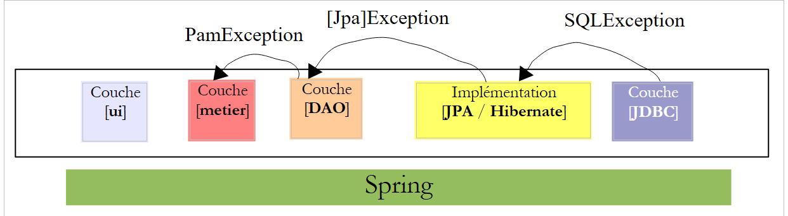 |
- تطلق الطبقة [JDBC] استثناءات من النوع [SQLException]
- الطبقة [JPA] تطلق استثناءات خاصة بالتنفيذ JPA المستخدم
- الطبقة [DAO] تطلق استثناءات من النوع [PamException] غير الخاضعة للرقابة
وهذا له نتيجتان:
- لن تكون الطبقة [metier] ملزمة بإدارة استثناءات الطبقة [DAO] باستخدام try / catch. يمكنها ببساطة تركها تنتقل إلى الطبقة [ui].
- لا يتعين على أساليب واجهة [IDao] تضمين طبيعة الاستثناء [PamException] في توقيعها، مما يتيح إمكانية تنفيذ هذه الواجهة باستخدام فئات تطلق نوعًا آخر من الاستثناءات غير الخاضعة للرقابة.
سيتم وضع الفئة [PamException] في الحزمة [exception] لمشروع Netbeans:
 |
وإليك كودها:
- السطر 4: [PamException] مشتق من [RuntimeException]. لذلك، فهو نوع من الاستثناءات التي لا يُلزمنا المُجمِّع بإدارتها باستخدام try / catch أو وضعها في توقيع الطرق. ولهذا السبب، لا يوجد [PamException] في توقيع طرق واجهة [IDao]. وهذا يسمح بتنفيذ هذه الواجهة بواسطة فئة تطلق نوعًا آخر من الاستثناءات، شريطة أن تكون هذه الفئة مشتقة أيضًا من [RuntimeException].
- للتمييز بين الأخطاء التي قد تحدث، يتم استخدام رمز الخطأ في السطر 7. المنشئات الثلاثة في الأسطر 14 و19 و24 هي تلك الخاصة بالفئة الأم [RuntimeException] التي تمت إضافة معلمة إليها: وهي رمز الخطأ الذي نريد إعطاءه للاستثناء.
سيكون عمل التطبيق، من وجهة نظر الاستثناءات، كما يلي:
- ستقوم الطبقة [DAO] بتغليف أي استثناء يتم مواجهته، في استثناء من النوع [PamException]، وإعادة إطلاقه إلى الطبقة [métier].
- ستسمح الطبقة [métier] بترحيل الاستثناءات التي أطلقتها الطبقة [DAO]. وستقوم بتغليف أي استثناء يحدث في الطبقة [métier]، في استثناء من النوع [PamException] وستعيد إطلاق هذا الأخير للطبقة [ui].
- تقوم الطبقة [ui] باعتراض جميع الاستثناءات التي ترتفع من الطبقتين [métier] و [DAO]. وستكتفي بعرض الاستثناء على وحدة التحكم أو واجهة المستخدم الرسومية.
لننظر الآن بالتتابع في تنفيذ الطبقتين [DAO] و [metier].
5.9. الطبقة [DAO] للتطبيق [PAM]
نحن نضع أنفسنا في إطار البنية التالية:
 |
5.9.1. التنفيذ
قراءات موصى بها: الفقرة 3.1.3 من [ref1]
السؤال: باستخدام تكامل Spring / JPA، اكتب فئات [CotisationDao, IndemniteDao, EmployeDao] لتنفيذ واجهات [ICotisationDao, IIndemniteDao, IEmployeDao]. ستقوم كل طريقة من طرق الفئة باعتراض أي استثناء محتمل وتغلفه في استثناء من النوع [PamException] مع رمز خطأ خاص بالاستثناء الذي تم اعتراضه.
ستكون فئات التنفيذ جزءًا من الحزمة [dao]:
 |
5.9.2. التكوين
قراءات موصى بها: الفقرة 3.1.5 من [ref1]
يتم تكوين التكامل DAO / JPA بواسطة ملف Spring [spring-config-dao.xml] وملف JPA [persistence.xml]:
 |
السؤال: اكتب محتوى هذين الملفين. سنفترض أن قاعدة البيانات المستخدمة هي قاعدة البيانات MySQL5 [dbpam_hibernate] التي تم إنشاؤها بواسطة البرنامج النصي SQL [dbpam_hibernate.sql]. سيحدد ملف Spring الفئات الثلاثة التالية: employeDao من النوع EmployeDao، وindemniteDao من النوع IndemniteDao، cotisationDao من النوع CotisationDao. علاوة على ذلك، سيكون التنفيذ JPA المستخدم هو Hibernate.
5.9.3. الاختبارات
قراءات موصى بها: الفقرتان 3.1.6 و 3.1.7 من [ref1]
الآن بعد أن تمت كتابة الطبقة [DAO] وتكوينها، يمكننا اختبارها. ستكون بنية الاختبارات كما يلي:
 |
5.9.4. InitDB
سنقوم بإنشاء برنامجين لاختبار الطبقة [DAO]. سيتم وضعهما في الحزمة [dao] [2] من الفرع [Test Packages] [1] لمشروع Netbeans. هذا الفرع غير مضمن في المشروع الذي تم إنشاؤه بواسطة الخيار [Build project]، مما يضمن لنا أن برامج الاختبار التي نضعها فيه لن يتم تضمينها في ملف .jar النهائي للمشروع.
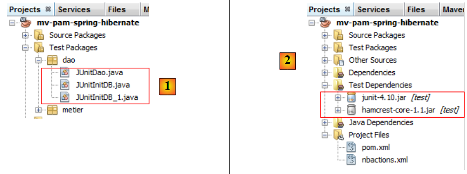 |
تتعرف الفئات الموضوعة في الفرع [Test Packages] على الفئات الموجودة في الفرع [Source Packages] وكذلك على مكتبات فئات المشروع. إذا احتاجت الاختبارات إلى مكتبات أخرى غير تلك الموجودة في المشروع، فيجب الإعلان عنها في الفرع [Test Libraries] [2].
تستخدم فئات الاختبارات أداة الاختبارات الفردية JUnit:
- لا تجري [JUnitInitDB] أي اختبارات. فهي تملأ قاعدة البيانات ببعض السجلات ثم تعرضها على وحدة التحكم.
- تقوم [JUnitDao] بإجراء سلسلة من الاختبارات وتتحقق من نتائجها.
الهيكل الأساسي لفئة [JUnitInitDB] هو كما يلي:
- يتم تنفيذ الطريقة [init] قبل بدء سلسلة الاختبارات (التعليق التوضيحي @BeforeClass). وهي تقوم بإنشاء مثيل للطبقة [DAO].
- يتم تنفيذ الطريقة [clean] قبل كل اختبار (التعليق التوضيحي @Before). وهي تقوم بإفراغ قاعدة البيانات.
- الطريقة [initDB] هي اختبار (التعليق التوضيحي @Test). وهي الاختبار الوحيد. يجب أن يحتوي الاختبار على تعليمات التأكيد Assert.assertCondition. هنا لن يكون هناك أي منها. وبالتالي، فإن هذه الطريقة هي اختبار زائف. وتتمثل مهمتها في ملء قاعدة البيانات ببعض الأسطر ثم عرض محتوى قاعدة البيانات على وحدة التحكم. يتم هنا استخدام الطريقتين create و findAll من الطبقات [DAO].
السؤال: أكمل كود الفئة [JUnitInitDB]. سنستعين بالمثال الوارد في الفقرة 3.1.6 من [ref1]. سيقوم الكود بإنشاء المحتوى المعروض في الفقرة 5.1.
5.9.5. تنفيذ الاختبارات
نحن الآن جاهزون لتنفيذ [InitDB]. نصف الإجراء باستخدام SGBD MySQL5:
 |
- تم إعداد فئات [1] وملفات التكوين [2] وفئات اختبار الطبقة [DAO] [3]،
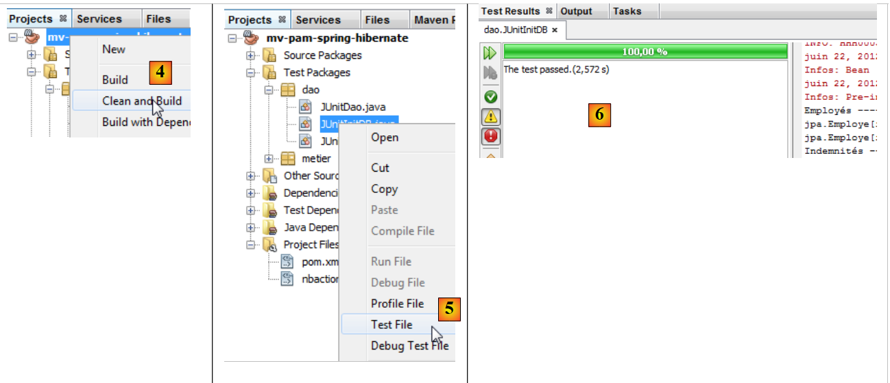 |
- يتم إنشاء المشروع [4]
- يتم تنفيذ الفئة [JUnitInitDB] [5]. يتم تشغيل SGBD MySQL5 باستخدام قاعدة بيانات موجودة [dbpam_hibernate]،
- تشير النافذة [Test Results] و [6] إلى أن الاختبارات قد نجحت. هذه الرسالة ليست ذات أهمية هنا، لأن البرنامج [JUnitInitDB] لا يحتوي على أي تعليمات تأكيد Assert.assertCondition، والتي قد تتسبب في فشل الاختبار. ومع ذلك، فإن هذا يوضح أنه لم تكن هناك استثناءات أثناء تنفيذ الاختبار.
تحتوي نافذة [Output] على سجلات التنفيذ وسجلات Spring وسجلات الاختبار نفسه. العروض التي قامت بها الفئة [JUnitInitDB] هي كما يلي:
تم ملء الجداول [EMPLOYES, INDEMNITES, COTISATIONS]. يمكن التحقق من ذلك من خلال اتصال Netbeans بقاعدة البيانات [dbpam_hibernate].
 |
- في [1]، في علامة التبويب [services]، يمكن عرض بيانات الجدول [employes] من الاتصال [dbpam_hibernate] [2]،
- في [3] النتيجة.
5.9.6. JUnitDao
ننتقل الآن إلى فئة ثانية من الاختبارات [JUnitDao]:
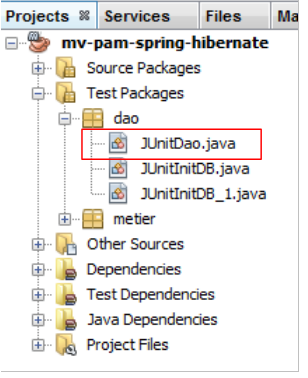 |
سيكون الهيكل الأساسي للفئة كما يلي:
1 2 3 4 5 6 7 8 9 10 11 12 13 14 15 16 17 18 19 20 21 22 23 24 25 26 27 28 29 30 31 32 33 34 35 36 37 38 39 40 41 42 43 44 45 46 47 48 49 50 51 52 53 54 55 56 57 58 59 60 61 62 63 64 65 66 67 68 69 70 71 72 73 74 75 76 77 78 79 80 81 82 83 84 85 86 87 88 89 90 91 92 93 94 95 96 97 98 99 100 101 102 103 104 105 106 107 108 109 110 111 112 113 114 115 116 117 118 119 120 121 122 123 124 125 126 127 128 129 130 131 132 133 134 135 136 137 138 139 140 141 142 143 144 145 146 147 148 149 150 151 152 153 154 155 156 157 158 159 160 161 162 163 164 165 166 167 168 169 170 171 172 173 174 175 176 177 178 179 180 181 182 183 184 185 186 187 | |
في فئة الاختبارات السابقة، يتم إفراغ قاعدة البيانات قبل كل اختبار.
السؤال: اكتب الطرق التالية:
1 - test02: سنستلهم من test01
2 - test03: يمتلك الموظف حقلًا من النوع Indemnite. لذا، يجب إنشاء كيان Indemnite وكيان Employe
3 - test04.
باتباع نفس الطريقة المتبعة في فئة الاختبارات [JUnitInitDB]، نحصل على النتائج التالية:
 |
- في [1]، يتم تنفيذ فئة الاختبارات
- في [2]، نتائج الاختبارات في النافذة [Test Results]
لنقم بإحداث خطأ لنرى كيف يتم الإبلاغ عنه في صفحة النتائج:
السطر 13، ستتسبب المقارنة في حدوث خطأ، حيث تبلغ قيمة Csgrds 3.49 (السطر 8). يؤدي تنفيذ فئة الاختبارات إلى النتائج التالية:
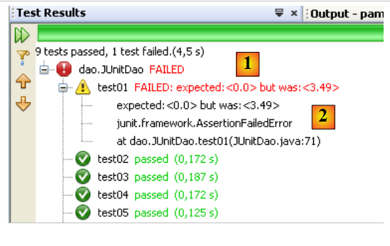 |
- تُظهر صفحة النتائج [1] الآن أن هناك اختبارات لم تنجح.
- في [2]، ملخص للاستثناء الذي تسبب في فشل الاختبار. يوجد فيه رقم سطر كود Java الذي حدث فيه الاستثناء.
5.10. الطبقة [metier] للتطبيق [PAM]
الآن بعد أن تمت كتابة الطبقة [DAO]، ننتقل إلى دراسة الطبقة التجارية [2]:
 |
5.10.1. واجهة Java [IMetier]
تم وصفها في الفقرة 5.7. ونذكرها أدناه:
سيتم تنفيذ الطبقة [metier] في حزمة [metier]:
 |
ستتضمن الحزمة [metier]، بالإضافة إلى الواجهة [IMetier] وتنفيذها [Metier]، فئتين أخريين هما [FeuilleSalaire] و [ElementsSalaire]. تم تقديم الفئة [FeuilleSalaire] بإيجاز في الفقرة 5.7. ونعود إليها الآن.
5.10.2. الفئة [FeuilleSalaire]
تُرجع الطريقة [calculerFeuilleSalaire] للواجهة [IMetier] كائنًا من النوع [FeuilleSalaire] الذي يمثل العناصر المختلفة لورقة الراتب. وتعريفها هو كما يلي:
- السطر 7: تنفذ الفئة واجهة Serializable لأن مثيلاتها قد يتم تبادلها عبر الشبكة.
- السطر 9: الموظف المعني بكشوفة الراتب
- السطر 10: معدلات الاشتراكات المختلفة
- السطر 11: التعويضات المختلفة المرتبطة بمؤشر الموظف
- السطر 12: العناصر المكونة لراتبه
- الأسطر 14-22: منشئا الفئة
- السطور 25-27: طريقة [toString] التي تحدد كائنًا معينًا [FeuilleSalaire]
- السطور 29 وما بعدها: الوصول العام إلى الحقول الخاصة للفئة
تجمع الفئة [ElementsSalaire] المشار إليها في السطر 11 من الفئة [FeuilleSalaire] أعلاه، العناصر المكونة لبيان الراتب. وتعريفها هو كما يلي:
- السطر 3: تنفذ الفئة الواجهة Serializable لأنها مكون من فئة FeuilleSalaire التي يجب أن تكون قابلة للتسلسل.
- السطر 6: الراتب الأساسي
- السطر 7: الاشتراكات الاجتماعية المدفوعة على هذا الراتب الأساسي
- السطر 8: بدلات إعالة الطفل اليومية
- السطر 9: بدلات الوجبات اليومية للطفل
- السطر 10: الراتب الصافي المستحق الدفع للمربية
- السطور 12-24: مُنشئو الفئة
- السطور 27-31: طريقة [toString] التي تحدد كائنًا معينًا [ElementsSalaire]
- السطور 34 وما بعدها: الوصول العام إلى الحقول الخاصة للفئة
5.10.3. فئة التنفيذ [Metier] للطبقة [metier]
قد تكون فئة التنفيذ [Metier] للطبقة [metier] كما يلي:
- السطر 5: تعمل تعليمة Spring @Transactional على ضمان أن كل طريقة في الفئة ستتم داخل معاملة.
- السطران 9-10: الإشارات إلى طبقات [DAO] للكيانات [Cotisation, Employe, Indemnite]
- الأسطر 14-17: الطريقة [calculerFeuilleSalaire]
- الأسطر 20-22: الطريقة [findAllEmployes]
- السطر 24 وما بعده: واصلات الوصول العامة للحقول الخاصة للفئة
السؤال: اكتب كود الطريقة [findAllEmployes].
السؤال: اكتب كود الطريقة [calculerFeuilleSalaire].
تجدر الإشارة إلى النقاط التالية:
- تم شرح طريقة حساب الراتب في الفقرة 5.2.
- إذا كان المعامل [SS] لا يتطابق مع أي موظف (أرجعت الطبقة [DAO] مؤشرًا null)، فستطلق الطريقة استثناءً من النوع [PamException] مع رمز خطأ مناسب.
5.10.4. اختبارات الطبقة [metier]
نقوم بإنشاء برنامجين للاختبار:
 |
يتم إنشاء فئات الاختبار [3] في حزمة [metier] [2] من الفرع [Test Packages] [1] للمشروع.
قد يكون شكل الفصل [JUnitMetier_1] كما يلي:
لا يوجد تأكيد Assert.assertCondition في الفئة. نحن نسعى ببساطة إلى حساب بعض الرواتب من أجل التحقق منها يدويًا لاحقًا. العرض الذي يظهر على الشاشة عند تنفيذ الفئة السابقة هو التالي:
- السطر 4: كشف راتب جوستين لافيرتي
- السطر 5: كشف راتب ماري جوفينال
- السطر 6: الاستثناء الناتج عن عدم وجود الموظف رقم SS 'xx'.
السؤال: يستخدم السطر 17 من [JUnitMetier_1] حبة Spring المسماة metier. اذكر تعريف هذه الحبة في الملف [spring-config-metier-dao.xml].
قد تكون فئة [JUnitMetier_2] كما يلي:
الفئة [JUnitMetier_2] هي نسخة من الفئة [JUnitMetier_1]، حيث تم هذه المرة وضع تأكيدات في الطريقة test01.
السؤال: اكتب الطريقة test01.
عند تنفيذ الفئة [JUnitMetier_2]، نحصل على النتائج التالية إذا سارت الأمور على ما يرام:

5.11. الطبقة [ui] للتطبيق [PAM] – الإصدار console
الآن بعد أن تمت كتابة الطبقة [metier]، يتبقى لنا كتابة الطبقة [ui] [1]:
 |
سننشئ تطبيقين مختلفين للطبقة [ui]: إصدار console وإصدار رسومي swing:
 |
5.11.1. الفئة [ui.console.Main]
نبدأ أولاً بالتطبيق الخاص بوحدة التحكم الذي تم تنفيذه بواسطة الفئة [ui.console.Main] المذكورة أعلاه. وقد تم وصف طريقة عمله في الفقرة 5.3. قد يكون الهيكل الأساسي للفئة [Main] كما يلي:
السؤال: أكمل الكود أعلاه.
5.11.2. التنفيذ
لتنفيذ الفئة [ui.console.Main]، يتم اتباع الخطوات التالية:
 |
- في [1]، حدد خصائص المشروع،
- في [2]، حدد خاصية [Run] للمشروع،
- استخدم الزر [3] لتحديد الفئة (المعروفة بالفئة الرئيسية) المراد تنفيذها،
- حدد الفئة [4]،
- تظهر الفئة في [5]. تحتاج هذه الفئة إلى ثلاث معلمات للتنفيذ (رقم SS، عدد ساعات العمل، عدد أيام العمل). توضع هذه المعلمات في [6]،
- وبعد ذلك، يمكن تنفيذ المشروع [7]. التكوين السابق يعني أن الفئة [ui.console.Main] هي التي سيتم تنفيذها.
يتم الحصول على نتائج التنفيذ في النافذة [output]:
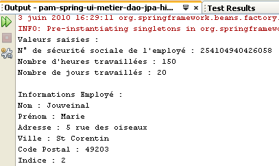 |  |
5.12. الطبقة [ui] للتطبيق [PAM] – الإصدار الرسومي
نقوم الآن بتنفيذ الطبقة [ui] بواجهة رسومية:
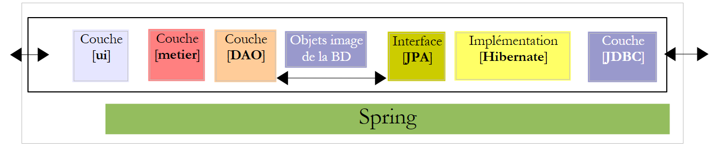 |
 |
- في [1]، الفئة [PamJFrame] للواجهة الرسومية
- إلى [2]: واجهة المستخدم الرسومية
5.12.1. دليل سريع
لإنشاء واجهة المستخدم الرسومية، يمكن اتباع الخطوات التالية:
 |
- [1]: ننشئ ملفًا جديدًا باستخدام الزر [1] [New File...]
- [2]: نختار فئة الملف [Swing GUI Forms]، c.a.d. نماذج رسومية
- [3]: نختار النوع [JFrame Form]، وهو نوع من النماذج الفارغة
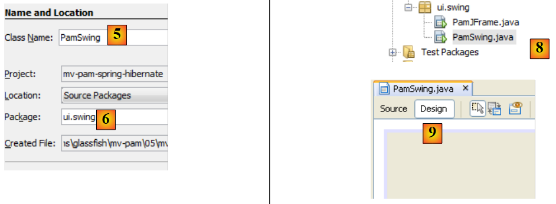 |
- [5]: نسمي النموذج الذي سيكون أيضًا فئة
- [6]: نضع النموذج في حزمة
- [8]: يتم إضافة النموذج إلى شجرة المشروع
- [9]: يمكن الوصول إلى النموذج من خلال منظورين: [Design] [9] الذي يسمح برسم المكونات المختلفة للنموذج، و [Source] [10 ci-dessous] الذي يتيح الوصول إلى كود Java الخاص بالنموذج. في النهاية، النموذج هو فئة Java كغيرها. المنظور [Design] هو أداة لتصميم النموذج. مع كل إضافة لمكون في الوضع [Design]، يتم إضافة كود Java في المنظور [Source] لأخذ ذلك في الاعتبار.
 |
- [11]: توجد قائمة مكونات Swing المتاحة للنموذج في النافذة [Palette].
- [12]: تعرض نافذة [Inspector] شجرة مكونات النموذج. ستوجد المكونات التي لها تمثيل مرئي في الفرع [JFrame]، بينما توجد المكونات الأخرى في الفرع [Other Components].
 |
- في [13]، نختار مكونًا [JLabel] بنقرة واحدة
- في [14]، نضعه على النموذج في الوضع [Design]
- في [15]، نحدد خصائص JLabel (النص، الخط).
 |
- في [16]، النتيجة التي تم الحصول عليها.
- في [17]، نطلب معاينة النموذج
- في [18]، النتيجة
- في [19]، تمت إضافة التسمية [JLabel1] إلى شجرة المكونات في النافذة [Inspector]
 |
- إلى [20] و [21]: في منظور [Source] للنموذج، تمت إضافة كود Java لإدارة JLabel المضاف.
يتوفر دليل تعليمي حول إنشاء النماذج باستخدام Netbeans على الرابط [http://www.netbeans.org/kb/trails/matisse.html].
5.12.2. الواجهة الرسومية [PamJFrame]
سنقوم بإنشاء واجهة المستخدم الرسومية التالية:
 |
- في [1]، الواجهة الرسومية
- في [2]، شجرة مكوناتها: JLabel وستة حاويات JPanel
JLabel1
 |
JPanel1
 |  |
JPanel2
 |  |
JPanel3
 | 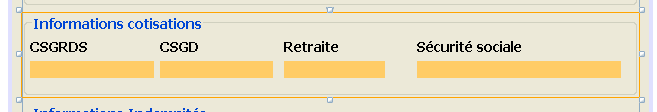 |
JPanel4
 |  |
JPanel5
 |  |
تدريب عملي: قم ببناء واجهة المستخدم الرسومية السابقة بالاستعانة بالبرنامج التعليمي [http://www.netbeans.org/kb/trails/matisse.html].
5.12.3. أحداث واجهة المستخدم الرسومية
قراءات موصى بها: الفصل [Interfaces graphiques] من [ref2].
سنقوم بإدارة النقر على الزر [jButtonSalaire]. لإنشاء طريقة إدارة هذا الحدث، يمكننا اتباع الخطوات التالية:
 |
يتم إنشاء معالج النقر على الزر [JButtonSalaire]:
يتم أيضًا إنشاء كود Java الذي يربط الطريقة السابقة بالنقر على الزر [JButtonSalaire]:
تشير الأسطر 2-5 إلى أن النقر (evt من النوع ActionPerformed) على الزر [jButtonSalaire] (السطر 2) يجب أن تتم إدارته بواسطة الطريقة [jButtonSalaireActionPerformed] (السطر 4).
سنقوم أيضًا بمعالجة الحدث [caretUpdate] (تحريك مؤشر الإدخال) في حقل الإدخال [jTextFieldHT]. لإنشاء معالج هذا الحدث، نتبع نفس الخطوات السابقة:
 |
يتم إنشاء معالج الحدث [caretUpdate] في حقل الإدخال [jTextFieldHT]:
يتم أيضًا إنشاء كود Java الذي يربط الطريقة السابقة بالحدث [caretUpdate] في حقل الإدخال [jTextFieldHT]:
تشير الأسطر 1-4 إلى أن الحدث [caretUpdate] (السطر 2) على الزر [jTextFieldHT] (السطر 1) يجب أن تتم إدارته بواسطة الطريقة [ jTextFieldHTCaretUpdate] (السطر 3).
5.12.4. تهيئة واجهة المستخدم الرسومية
لنعد إلى بنية تطبيقنا:
 |
تحتاج الطبقة [ui] إلى مرجع في الطبقة [metier]. دعونا نذكر كيف تم الحصول على هذا المرجع في التطبيق console:
الطريقة هي نفسها في التطبيق الرسومي. يجب عند تهيئة هذا التطبيق أن يتم أيضًا تهيئة المرجع [IMetier metier] في السطر 3 أعلاه. الرمز الذي تم إنشاؤه للواجهة الرسومية هو في الوقت الحالي كما يلي:
- السطور 29-35: الطريقة الثابتة [main] التي تطلق التطبيق
- السطر 32: يتم إنشاء مثيل للواجهة الرسومية [PamJFrame] وإظهاره.
- الأسطر 7-9: منشئ واجهة المستخدم الرسومية.
- السطر 8: استدعاء الطريقة [initComponents] المحددة في السطر 17. يتم إنشاء هذه الطريقة تلقائيًا بناءً على العمل المنجز في الوضع [Design]. لا يجب تغييرها.
- السطر 21: الطريقة التي ستدير تحريك مؤشر الإدخال في الحقل [jTextFieldHT]
- السطر 25: الطريقة التي ستدير النقر على الزر [jButtonSalaire]
لإضافة التهيئات الخاصة بنا إلى الكود السابق، يمكننا القيام بما يلي:
- السطر 4: يتم استدعاء دالة خاصة لإجراء عمليات التهيئة الخاصة بنا. ويتم تعريف هذه العمليات في الأسطر 10-42
السؤال: باستخدام التعليقات كمرجع، أكمل كود الإجراء [doMyInit].
5.12.5. مديرو الأحداث
السؤال: اكتب الأسلوب [jTextFieldHTCaretUpdate]. يجب أن يضمن هذا الأسلوب أنه إذا لم تكن البيانات الموجودة في الحقل [jTextFieldHT] عددًا حقيقيًا >=0، فإن الزر [jButtonSalaire] يجب أن يكون غير نشط.
السؤال: اكتب الطريقة [jButtonSalaireActionPerformed] التي يجب أن تعرض كشف راتب الموظف المحدد في [jComboBoxEmployes].
5.12.6. تشغيل واجهة المستخدم الرسومية
لتشغيل واجهة المستخدم الرسومية، سنقوم بتعديل تكوين [Run] للمشروع:
 |
- إلى [1]، ووضع فئة واجهة المستخدم الرسومية
يجب أن يكون المشروع كاملاً مع ملفات التكوين الخاصة به (persistence.xml، spring-config-metier-dao.xml) وفئة واجهة المستخدم الرسومية. سنقوم بتشغيل الهدف SGBD قبل تنفيذ المشروع.
5.13. تنفيذ الطبقة JPA مع EclipseLink
نحن مهتمون بالبنية التالية حيث يتم الآن تنفيذ الطبقة JPA بواسطة EclipseLink:
 |
5.13.1. مشروع Netbeans
يتم الحصول على مشروع Netbeans الجديد عن طريق نسخ المشروع السابق:
 |
- إلى [1]: بعد النقر بزر الماوس الأيمن على مشروع Hibernate، اختر Copy
- باستخدام الزر [2]، اختر المجلد الأصلي للمشروع الجديد. يظهر اسم المجلد في [3].
- في [4]، قم بتسمية المشروع الجديد
- في [5]، اسم مجلد المشروع
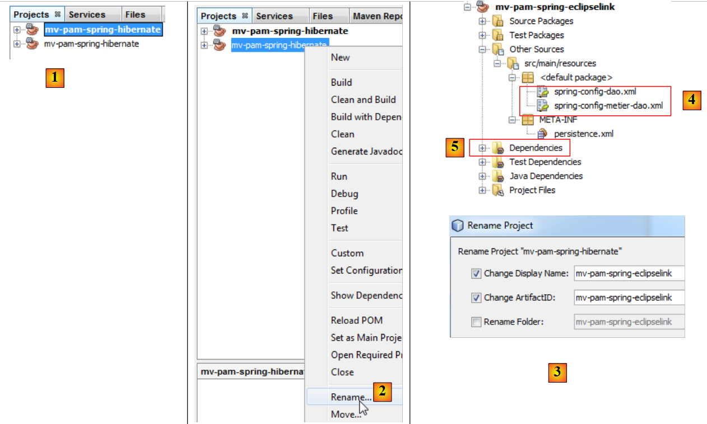 |
- في [1]، تم إنشاء المشروع الجديد. يحمل نفس اسم الأصل،
- في [2] و [3]، يتم إعادة تسميته إلى [mv-pam-spring-eclipselink].
يجب تعديل المشروع في نقطتين لتكييفه مع الطبقة الجديدة JPA / EclipseLink:
- في [4]، يجب تعديل ملفات تكوين Spring. حيث توجد فيها تكوين الطبقة JPA.
- في [5]، يجب تعديل مكتبات المشروع: يجب استبدال مكتبات Hibernate بمكتبات EclipseLink.
لنبدأ بالنقطة الأخيرة. سيكون ملف [pom.xml] للمشروع الجديد هو هذا:
<project xmlns="http://maven.apache.org/POM/4.0.0" xmlns:xsi="http://www.w3.org/2001/XMLSchema-instance"
xsi:schemaLocation="http://maven.apache.org/POM/4.0.0 http://maven.apache.org/xsd/maven-4.0.0.xsd">
<modelVersion>4.0.0</modelVersion>
<groupId>istia.st</groupId>
<artifactId>mv-pam-spring-eclipselink</artifactId>
<version>1.0-SNAPSHOT</version>
<packaging>jar</packaging>
<name>mv-pam-spring-eclipselink</name>
<url>http://maven.apache.org</url>
<repositories>
<repository>
<url>http://repo1.maven.org/maven2/</url>
<id>swing-layout</id>
<layout>default</layout>
<name>Repository for library Library[swing-layout]</name>
</repository>
<repository>
<url>http://download.eclipse.org/rt/eclipselink/maven.repo/</url>
<id>eclipselink</id>
<layout>default</layout>
<name>Repository for library Library[eclipselink]</name>
</repository>
</repositories>
<properties>
<project.build.sourceEncoding>UTF-8</project.build.sourceEncoding>
</properties>
<dependencies>
<dependency>
<groupId>junit</groupId>
<artifactId>junit</artifactId>
<version>4.10</version>
<scope>test</scope>
<type>jar</type>
</dependency>
<dependency>
<groupId>commons-dbcp</groupId>
<artifactId>commons-dbcp</artifactId>
<version>1.2.2</version>
</dependency>
<dependency>
<groupId>commons-pool</groupId>
<artifactId>commons-pool</artifactId>
<version>1.6</version>
</dependency>
<dependency>
<groupId>org.springframework</groupId>
<artifactId>spring-tx</artifactId>
<version>3.1.1.RELEASE</version>
<type>jar</type>
</dependency>
<dependency>
<groupId>org.springframework</groupId>
<artifactId>spring-beans</artifactId>
<version>3.1.1.RELEASE</version>
<type>jar</type>
</dependency>
<dependency>
<groupId>org.springframework</groupId>
<artifactId>spring-context</artifactId>
<version>3.1.1.RELEASE</version>
<type>jar</type>
</dependency>
<dependency>
<groupId>org.springframework</groupId>
<artifactId>spring-orm</artifactId>
<version>3.1.1.RELEASE</version>
<type>jar</type>
</dependency>
<dependency>
<groupId>org.eclipse.persistence</groupId>
<artifactId>eclipselink</artifactId>
<version>2.3.0</version>
</dependency>
<dependency>
<groupId>org.eclipse.persistence</groupId>
<artifactId>javax.persistence</artifactId>
<version>2.0.3</version>
</dependency>
<dependency>
<groupId>mysql</groupId>
<artifactId>mysql-connector-java</artifactId>
<version>5.1.6</version>
</dependency>
<dependency>
<groupId>org.swinglabs</groupId>
<artifactId>swing-layout</artifactId>
<version>1.0.3</version>
</dependency>
</dependencies>
</project>
- الأسطر 73-82: التبعيات لتنفيذ JPA EclipseLink،
- الأسطر 19-24: مستودع Maven لـ EclipseLink.
يجب تعديل ملفات تكوين Spring للإشارة إلى أن التنفيذ JPA قد تغير. في الملفين، يتغير فقط القسم الذي يهيئ الطبقة JPA. على سبيل المثال، في [spring-config-metier-dao.xml] لدينا:
تقوم الأسطر 19-36 بتكوين الطبقة JPA. التنفيذ JPA المستخدم هو Hibernate (السطر 22). علاوة على ذلك، قاعدة البيانات المستهدفة هي [dbpam_hibernate] (السطر 41).
للتحول إلى تطبيق JPA / EclipseLink، يتم استبدال الأسطر 19-35 أعلاه بالأسطر التالية:
- السطر 5: التنفيذ JPA المستخدم هو EclipseLink
- السطر 9: تحدد الخاصية databasePlatform الهدف SGBD، وهو هنا MySQL
- السطر 11: لإنشاء جداول قاعدة البيانات عند إنشاء مثيل الطبقة JPA. هنا، الخاصية موجودة في التعليقات.
- السطر 7: لعرض الأوامر SQL الصادرة عن الطبقة JPA على وحدة التحكم. هنا، الخاصية موجودة في التعليقات.
علاوة على ذلك، تصبح قاعدة البيانات المستهدفة هي [dbpam_eclipselink] (السطر 4 أدناه):
5.13.2. تنفيذ الاختبارات
قبل اختبار التطبيق بالكامل، من الأفضل التحقق مما إذا كانت اختبارات JUnit تنجح مع التنفيذ الجديد JPA. قبل إجراء الاختبارات، سنبدأ بحذف الجداول من قاعدة البيانات. للقيام بذلك، في علامة التبويب [Runtime] في Netbeans، إذا لزم الأمر، سننشئ اتصالاً بقاعدة البيانات dbpam_eclipselink / MySQL5. بمجرد الاتصال بقاعدة البيانات dbpam_eclipselink / MySQL5، يمكننا المضي قدمًا في حذف الجداول كما هو موضح أدناه:
- [1]: قبل الحذف
- [2]: بعد الحذف
 |
بعد ذلك، يمكن إجراء الاختبار الأول على الطبقة [DAO]: InitDB التي تملأ قاعدة البيانات. لكي يتم إعادة إنشاء الجداول التي تم حذفها مسبقًا بواسطة التطبيق، يجب التأكد من أن السطر التالي موجود في تكوين Spring JPA / EclipseLink:
موجودة وليست موضوعة في التعليقات.
نقوم ببناء المشروع (Build) ثم ننفذ الاختبار [JUnitInitDB] :
 |
- في [1]، يتم تنفيذ الاختبار InitDB.
- في [2]، يفشل الاختبار. يتم إطلاق الاستثناء بواسطة Spring وليس بواسطة اختبار فاشل.
سبب الخطأ: org.springframework.beans.factory.BeanCreationException: خطأ في إنشاء كائن bean باسم 'entityManagerFactory' المُعرَّف في مورد مسار الفئة [spring-config-DAO.xml]: فشل استدعاء طريقة init؛ الاستثناء المتداخل هو java.lang.IllegalStateException: يجب بدء تشغيل وكيل Java لاستخدام InstrumentationLoadTimeWeaver. راجع وثائق Spring.
يشير Spring إلى وجود مشكلة في التكوين. الرسالة غير واضحة. تم شرح سبب الاستثناء في الفقرة 3.1.9 من [ref1]. لكي تعمل تكوينات Spring / EclipseLink، يجب تشغيل JVM الذي يقوم بتشغيل التطبيق باستخدام معلمة معينة، وهي وكيل Java. شكل هذه المعلمة هو كما يلي:
[spring-agent.jar] هو وكيل Java الذي تحتاجه JVM لإدارة تكوين Spring / EclipseLink.
عند تنفيذ مشروع، يمكن تمرير معلمات إلى JVM:
 |
- في [1]، يمكن الوصول إلى خصائص المشروع
- في [2]، خصائص Run
- في [3]، يتم تمرير المعلمة -javaagent إلى JVM
5.13.3. InitDB
الآن، نحن جاهزون لاختبار [InitDB] مرة أخرى. هذه المرة، النتائج التي تم الحصول عليها هي كما يلي:
 |
- في [1]، نجح الاختبار
- في [2]، في علامة التبويب [Services]، نقوم بتحديث اتصال Netbeans بقاعدة البيانات [dbpam_eclipselink]
- في [3]، تم إنشاء أربع جداول
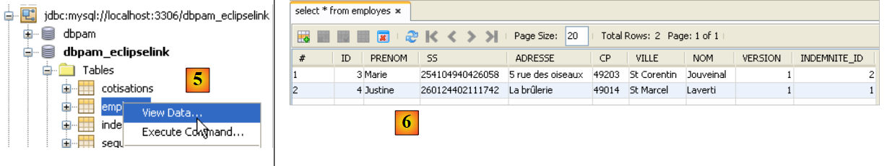 |
- في [5]، يتم عرض محتوى الجدول [employes]
- في [6]، النتيجة.
5.13.4. JUnitDao
قد يفشل تنفيذ فئة الاختبارات [JUnitDao]، حتى لو نجحت مع التنفيذ JPA / Hibernate. لفهم السبب، دعونا نحلل مثالاً.
الطريقة التي يتم اختبارها هي الطريقة IndemniteDao.create التالية:
- الأسطر 15-22: الطريقة التي تم اختبارها
طريقة الاختبار هي التالية:
package dao;
...
public class JUnitDao {
// الطبقات DAO
static private IEmployeDao employeDao;
static private IIndemniteDao indemniteDao;
static private ICotisationDao cotisationDao;
@BeforeClass
public static void init() {
// سجل
log("init");
// تكوين التطبيق
ApplicationContext ctx = new ClassPathXmlApplicationContext("spring-config-DAO.xml");
// طبقات DAO
employeDao = (IEmployeDao) ctx.getBean("employeDao");
indemniteDao = (IIndemniteDao) ctx.getBean("indemniteDao");
cotisationDao = (ICotisationDao) ctx.getBean("cotisationDao");
}
@Before()
public void clean() {
// إفراغ قاعدة البيانات
for (Employe employe : employeDao.findAll()) {
employeDao.destroy(employe);
}
for (Cotisation cotisation : cotisationDao.findAll()) {
cotisationDao.destroy(cotisation);
}
for (Indemnite indemnite : indemniteDao.findAll()) {
indemniteDao.destroy(indemnite);
}
}
// السجلات
private static void log(String message) {
System.out.println("----------- " + message);
}
// اختبارات
….
@Test
public void test05() {
log("test05");
// يتم إنشاء تعويضين بنفس الرقم
// مخالفة لشرط تفرد المؤشر
boolean erreur = true;
Indemnite indemnite1 = null;
Indemnite indemnite2 = null;
Throwable th = null;
try {
indemnite1 = indemniteDao.create(new Indemnite(1, 1.93, 2, 3, 12));
indemnite2 = indemniteDao.create(new Indemnite(1, 1.93, 2, 3, 12));
erreur = false;
} catch (PamException ex) {
th = ex;
// عمليات التحقق
Assert.assertEquals(31, ex.getCode());
} catch (Throwable th1) {
th = th1;
}
// التحقق
Assert.assertTrue(erreur);
// سلسلة الاستثناءات
System.out.println("Chaîne des exceptions --------------------------------------");
System.out.println(th.getClass().getName());
while (th.getCause() != null) {
th = th.getCause();
System.out.println(th.getClass().getName());
}
// كان يجب الاحتفاظ بالتعويض الأول
Indemnite indemnite = indemniteDao.find(indemnite1.getId());
// التحقق
Assert.assertNotNull(indemnite);
Assert.assertEquals(1, indemnite.getIndice());
Assert.assertEquals(1.93, indemnite.getBaseHeure(), 1e-6);
Assert.assertEquals(2, indemnite.getEntretienJour(), 1e-6);
Assert.assertEquals(3, indemnite.getRepasJour(), 1e-6);
Assert.assertEquals(12, indemnite.getIndemnitesCP(), 1e-6);
// لم يكن من المفترض الاحتفاظ بالتعويض الثاني
List<Indemnite> indemnites = indemniteDao.findAll();
int nbIndemnites = indemnites.size();
Assert.assertEquals(nbIndemnites, 1);
}
...
}
السؤال: اشرح ما الذي يفعله الاختبار test05 ووضح النتائج المتوقعة.
النتائج التي تم الحصول عليها باستخدام طبقة JPA / Hibernate هي كما يلي:
اجتاز الاختبار، c.a.d. تم التحقق من صحة الافتراضات ولم تظهر أي استثناءات من طريقة الاختبار.
السؤال: اشرح ما حدث.
النتائج التي تم الحصول عليها باستخدام طبقة JPA / EclipseLink هي كما يلي:
كما حدث سابقًا مع Hibernate، نجح الاختبار، c.a.d. حيث تم التحقق من صحة الافتراضات ولم تحدث أي استثناءات خارج طريقة الاختبار.
السؤال: اشرح ما حدث.
السؤال: من هذين المثالين، ما الذي يمكن استنتاجه بشأن قابلية التبادل بين عمليات التنفيذ JPA؟ هل هي كاملة هنا؟
5.13.5. الاختبارات الأخرى
بمجرد اختبار الطبقة [DAO] واعتبارها صحيحة، يمكننا الانتقال إلى اختبارات الطبقة [metier] واختبارات المشروع نفسه في إصداره الخاص بوحدة التحكم أو الإصدار الرسومي. لا يؤثر تغيير تطبيق JPA بأي شكل على الطبقات [metier] و [ui]، وبالتالي إذا كانت هذه الطبقات تعمل مع Hibernate، فستعمل مع EclipseLink مع بعض الاستثناءات: يوضح المثال السابق بالفعل أن الاستثناءات التي تطلقها طبقات [DAO] قد تختلف. وبالتالي، في حالة استخدام الاختبار، يقوم Spring / JPA / Hibernate بإطلاق استثناء من النوع [PamException]، وهو استثناء خاص بالتطبيق [pam]، في حين أن Spring / JPA / EclipseLink يطلق استثناءً من النوع [TransactionSystemException]، وهو استثناء من إطار عمل Spring. إذا كانت الطبقة [ui]، في حالة استخدام الاختبار، تتوقع استثناءً من النوع [PamException] لأنها تم إنشاؤها باستخدام Hibernate، فإنها لن تعمل بعد الانتقال إلى EclipseLink.
5.13.6. المهمة المطلوبة
مهمة عملية: إعادة إجراء اختبارات التطبيقات console و swing باستخدام SGBD مختلفة: MySQL5، Oracle XE، SQL Server.